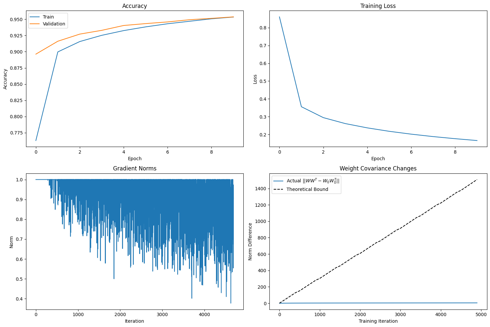

The Persistent Orthogonality of Trained Weight Matrices
weight-matrices · perturbation-theory · training
TL;DR
Implicit regularization. Gradient descent isn't a blind search; it respects the initial parameterization, gently changing the weights without violently breaking the beneficial structure we started with.
Training stability. Orthogonal matrices preserve norms, which helps prevent exploding or vanishing gradients. The derivation shows training maintains this property — why orthogonal initialization often trains more stably.
A new perspective. Carefully chosen initializations aren't just a good starting point — they can define a subspace or manifold within which the entire optimization process occurs.
I was surprised to notice that weight matrices initialized orthogonally tend to remain nearly orthogonal even after training. This got me thinking — even after applying nonlinear activations and running gradient descent over and over, that structure should have collapsed.
Experimenting with generated data and a few steps of training was somehow preserving the orthogonality, but this wasn't a reasonable explanation. I was looking for a good mathematical proof of this persistence.
Then I recalled Gilbert Strang's discussion on matrix perturbation theory — how small changes in a matrix affect its properties. That instantly clicked: perhaps training won't change the matrix completely but only perturbs it, so the structure remains intact. And the only way to track these changes is to measure how much $W^\top W$ drifts away from the identity matrix (since the weights are initialized orthogonally, $W^\top W$ before training equals the identity).
## Playing around with gradient descent
$$W_{t+1} = W_t - \eta \nabla \mathcal{L}(W_t)$$
If I apply this repeatedly, I get something like this:
For this I used a very common matrix identity from perturbation theory:
$$A^\top A - B^\top B \;=\; A^\top(A-B) + (A^\top - B^\top)B.$$
It can be easily verified that the LHS and RHS are the same (left as an exercise for the reader). Now by applying norms and using submultiplicativity and the triangle inequality, the following can be derived:
Thus we obtain an upper bound for how much the weight matrix differs from the orthogonally initialized matrix after training.
I started with a simple observation: orthogonality persists. Through matrix perturbation theory, I found a mathematical bound for this phenomenon:
$$\|W(t)^\top W(t) - I\| \;\le\; 2 \,\max(\|W(t)\|, 1)\,\eta t G.$$
At first glance, this bound seems circular — it requires knowing $\|W(t)\|$, a property of the trained matrix I was trying to understand. But this is where the observation and the theory converge beautifully: the very fact that we observe $W(t)$ to be nearly orthogonal means its singular values are all near $1$, so $\|W(t)\| \approx 1$. This collapses the bound into a much more intuitive form:
$$\|W(t)^\top W(t) - I\| \;\lesssim\; 2 \eta t G.$$
## Fascinating implications
-Implicit regularization: gradient descent respects the initial parameterization, gently changing the weights without breaking the structure we started with.
-Training stability: orthogonal matrices preserve norms, preventing exploding/vanishing gradients — and training maintains this property.
-A new perspective: a chosen initialization can define a subspace or manifold within which the whole optimization occurs.
## Practically testing things
A mathematical bound is only as interesting as its connection to reality. To test the derivation, I trained a simple classifier on MNIST using orthogonally initialized weights and gradient clipping ($G = 1.0$). The theory gives a strict upper limit:
$$\|W(t)^\top W(t) - I\| \;\le\; 2 \,\max(\|W(t)\|, 1)\,\eta t G.$$
After training for 10 epochs, the model reached a respectable 95.4% validation accuracy. The final numbers:
METRIC
VALUE
Validation accuracy
0.9537
Final gradient norm $G$
0.9009
Final weight norm $\max(\lVert W(t)\rVert, 1)$
16.3235
Actual deviation $\lVert W^\top W - I\rVert$
4.1151
Theoretical upper bound
1508.95
Bound / actual ratio
366.68

### What does this mean?
-The bound holds: the actual deviation ($4.12$) is indeed less than the calculated upper bound ($1508.95$).
-The bound is conservative: as is common, it's a worst-case scenario assuming all gradient updates conspire in the most destructive direction. In practice updates are noisy and cancel out, so the real change is much smaller.
-The real story is the trend: linear growth with $t$ and dependence on $\max(\|W(t)\|, 1)$ are the key insights — and the actual deviation staying orders of magnitude smaller shows training is a remarkably stable perturbation, not a destructive one.
Hope you got some good insights :) Have a great day!